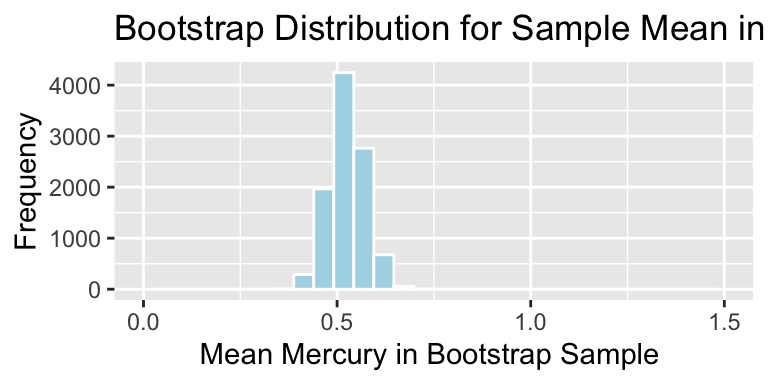

Chapter 3 Interval Estimation via Simulation
3.1 Sampling Variability and Margin of Error
3.1.1 Sampling Variability
Next, we turn our attention to the topic of quantifying uncertainty associated with a sample or experiment performed using random assignment.
Our goal is to generalize results to a larger population.
If our sample was collected in a way that is not representative of a larger population of interest, then we should be cautious about generalizing our results.
If we already have data about the entire population we are interested in, then these results are not relevant.
3.1.2 Election Polling Example
A Washington Post poll, of 702 registered voters in the state of Wisconsin, taken from September 8-13, 2020 showed that:
- 50% intend to vote for Joe Biden
- 46% intend to vote for Donald Trump
- 4% weren't sure or intend to vote for other candidates
Is this strong enough information to say that Joe Biden is ahead among all voters in Wisconsin? Is it possible that Biden is not really ahead, and the poll just happened to sample more of his supporters but random chance?
3.1.3 Investigation by Simulation
Key Questions:
By how much could proportions in a random sample of 702 voters plausibly differ from proportions for all Wisconsin voters?
We'll investigate this using the following steps:
- Assume we know the percentage of voters in the state supporting each candidate.
- Simulate taking random samples of 702 voters. Record how far the poll result differs from those of the population.
3.1.4 Larger Population
As of August 1, 2020, there were 3,420,587 registered voters in the state of Wisconsin.
- We'll assume (hypothetically) that for the upcoming election:
- 1,641,882 (48%) plan to vote for the Biden
- 1,641,882 (48%) plan to vote for the Trump
- 136,823 (4%) plan to vote for a third-party or independent candidate
- 1,641,882 (48%) plan to vote for the Biden

3.1.5 A sample of 702 voters
Vote <- factor(c(rep("Biden", 1641882), rep("Trump", 1641882), rep("Other", 136823)))
Population <- as.data.frame(Vote)Sample <- sample_n(Population, 702, replace=FALSE)Population Summary:
summary(Population$Vote)## Biden Other Trump
## 1641882 136823 1641882Results in random sample of 702 voters:
summary(Sample$Vote)## Biden Other Trump
## 330 31 341
3.1.6 A Second Sample of 702 Voters
Let's simulate taking another random sample of 702 voters.
Sample <- sample_n(Population, 702, replace=FALSE)Population Summary:
summary(Population$Vote)## Biden Other Trump
## 1641882 136823 1641882Results in random sample of 702 voters:
summary(Sample$Vote)## Biden Other Trump
## 333 20 349
3.1.7 A Third Sample of 702 Voters
Let's simulate taking another third random sample of 702 voters.
Sample <- sample_n(Population, 702, replace=FALSE)Population Summary:
summary(Population$Vote)## Biden Other Trump
## 1641882 136823 1641882Results in random sample of 702 voters:
summary(Sample$Vote)## Biden Other Trump
## 341 28 3333.1.8 A Fourth Sample of 702 Voters
Let's simulate taking another fourth random sample of 702 voters.
Sample <- sample_n(Population, 702, replace=FALSE)Population Summary:
summary(Population$Vote)## Biden Other Trump
## 1641882 136823 1641882Results in random sample of 702 voters:
summary(Sample$Vote)## Biden Other Trump
## 355 29 3183.1.9 A Fifth Sample of 702 Voters
Let's simulate taking another fourth random sample of 702 voters.
Sample <- sample_n(Population, 702, replace=FALSE)Population Summary:
summary(Population$Vote)## Biden Other Trump
## 1641882 136823 1641882Results in random sample of 702 voters:
summary(Sample$Vote)## Biden Other Trump
## 315 24 3633.1.10 Simulating Many Polls
Let's simulate 10,000 different polls of 702 voters and look at how much variability we see in the difference in proportions supporting each candidate.
set.seed(09132020)Biden <- rep(NA, 10000) #blank vector to store proportion supporting Biden
Trump <- rep(NA, 10000) #blank vector to store proportion supporting Trump
Other <- rep(NA, 10000) #blank vector to store proportion supporting Other
for (i in 1:10000){
Sample <- sample_n(Population, 702, replace=FALSE) #sample 1000 voters
Biden[i] <- sum(Sample == "Biden")/702 ## record number of Biden votes
Trump[i] <- sum(Sample == "Trump")/702 ## record number of Trump votes
Other[i] <- sum(Sample == "Other")/702 ## record number of Other votes
}
Sim <- 1:10000
PollingSim <- data.frame(Sim, Biden, Trump, Other)
PollingSim$PropDiff <- PollingSim$Biden-PollingSim$Trump3.1.11 Histogram of Difference in Sample Proportions
The histogram shows the difference in proportion favoring each party's candidate in the 10,000 samples.
Recall that the samples were taken under the assumption that there is no difference in support between the Republican or Democrat in the population.
Vote_Samp_Dist <- ggplot(data=PollingSim, aes(x=PropDiff)) + geom_histogram(fill="blue", color="white", binwidth=0.001) +
xlab(" Dem. Prop. - Rep. Prop") + ylab("Frequency") +
ggtitle("Sampling Distribution for Difference in Proportions")
Vote_Samp_Dist 
This distribution is called the sampling distribution for the difference in proportions.
3.1.12 Sampling Dist. for Diff. in Proportions

mean(PollingSim$PropDiff)## [1] 0.0003595442SE <- sd(PollingSim$PropDiff)
SE## [1] 0.03689199The sampling distribution for the difference in candidate support is approximately centered at 0, as we would expect. The standard deviation in difference between candidates is about 3.7 percentage points.
3.1.13 Difference in Sample Proportions (cont.)

c(quantile(PollingSim$PropDiff, .025), quantile(PollingSim$PropDiff, .975))## 2.5% 97.5%
## -0.07122507 0.07264957- Approximately 95% of the polls were within \(\pm 7\) of the actual difference, which in this case was assumed to be 0.
3.1.14 Conclusions from Election Polling Simulation
Since Biden is ahead by 4 percentage points in the Washington Post survey of 702 voters, it is plausible that he could really be ahead by as many as about 11 percentage points, or behind by as many as about 3.
The \(\pm .07\) is called a margin of error, and the resulting range of plausible values is called a confidence interval for the difference in proportions.
A confidence interval gives a reasonable range for a value pertaining to the entire population, using information from a sample.
3.1.15 What does "95% Confidence" Mean?
95% confidence means that if we were to repeat our procedure on many, random samples, then in the long run, 95% of them would contain the true difference in proportions supporting the candidates.
Here, we see results for 100 random samples. Notice that when we do \(\text{Prop. Diff} \pm 0.07\), approximately 95% lead to a confidence interval containing 0 (the assumed true difference).
3.2 Bootstrap Sampling for Election Example
3.2.1 A More Realistic Scenario
The prior simulation is based on the unrealistic assumption that we know the proportion of voters in the entire population favoring each candidate.
If we really know this, there would be no need to take polls.
In reality, we will only have the result of a single sample, and from that, we will need to determine how much our result might vary from the overall population parameter.
3.2.2 Example: Election Polling Survey
Recall the Washington Post Poll of 702 Wisconsin voters that showed 50% supporting Biden, and 46% supporting Trump.
Although the poll does not release exact counts, we can infer that 351 voters picked Biden, 323 picked Trump, and 28 picked someone else.
Without assuming anything about the larger population, how can we account for sampling variability to obtain a reasonable range for the true difference in proportion of voters supporting the candidates?
3.2.3 Illustration of the Bootstrap "Idea"
Bootstrap sampling is a popular modern approach for measuring sampling variability.
The idea is to mimic sampling from a population, by copying the sample many times, and then sampling from these copies.

We then calculate the statistic of interest (i.e. difference in proportions) in each bootstrap sample to get a sense of the amount of variability between samples.
3.2.4 The Bootstrap "Idea"
Create many (theoretically infinitely many) copies of the original sample.
Take a sample of the same size as our original sample. This is known as a bootstrap sample. Since we have created many copies of the original sample some cases will come up multiple times and others not at all in our bootstrap sample.
Calculate the difference in proportions supporting each candidate in the bootstrap sample.
Repeat steps 2 and 3 many (say 10,000) times, keeping track of the differences in proportions supporting each candidate.
Look at the distribution of differences calculated from the bootstrap samples. The variability in this distribution can be used to approximate the variability in the sampling distribution for the difference in proportions.
3.2.5 Bootstrap via Resampling Illustration
Copying the original sample infinitely many times, and then sampling from these copies is equivalent to simply sampling from the original sample, using replacement. This is how bootstrap sampling is done in practice.

3.2.6 Bootstrap Sampling with Replacement
In practice, the bootstrap is performed by resampling from the original data, with replacement.
Procedure:
Take a sample of the same size as our original sample, by sampling cases from the original sample, with replacement. Since are sampling with replacement, some cases will come up multiple times and others not at all in our bootstrap sample.
Calculate the difference in proportions supporting each candidate in the bootstrap sample.
Repeat steps 2 and 3 many (say 10,000) times, keeping track of the differences in proportions supporting each candidate.
Look at the distribution of differences calculated from the bootstrap samples. The variability in this distribution can be used to approximate the variability in the sampling distribution for the difference in proportions.
3.2.7 Code for Bootstrapping for Difference In Proportions
Vote <- c(rep("Biden", 351), rep("Trump", 323), rep("Other", 28))
Sample <- data.frame(Vote)
Difference <- rep(NA, 10000)
for (i in 1:10000){
BootstrapSample <- sample_n(Sample, 702, replace=TRUE)
Difference[i] <- (sum(BootstrapSample$Vote=="Biden") - sum(BootstrapSample$Vote=="Trump"))/702
}
Vote_BootstrapResults <- data.frame(Difference)3.2.8 Bootstrap Dist. for Diff. in Proportion

Note that the bootstrap distibution is centered at approximately 0.04, which was the observed difference we saw in our sample.
Individual sample differences seem to deviate by up to about \(\pm 0.07\).
Bootstrap standard error:
sd(Vote_BootstrapResults$Difference)## [1] 0.037008773.2.9 Bootstrap Percentile Confidence Interval
An approximate 95% percentile confidence interval for the difference in support is found by finding the 0.025 and 0.975 quantiles of the bootstrap distribution, since 95% of all bootstrap samples produce statistics between these values.
q.025 <- quantile(Vote_BootstrapResults$Difference, 0.025)
q.975 <- quantile(Vote_BootstrapResults$Difference, 0.975)c(q.025, q.975)## 2.5% 97.5%
## -0.03133903 0.11253561We can be 95% confident that Biden is between 11.3 percentage points ahead, and 3.1 percentage points behind.
3.2.10 95% Bootstrap Percentile Confidence Interval Visually

We can be 95% confident that Biden is between 11.3 percentage points ahead, and 3.1 percentage points behind.
3.2.11 Bootstrap Standard Error
The bootstrap standard error is the standard deviation of the bootstrap distribution. It measures the amount of variability in a statistic (in this cases difference in proportions) between samples of the given size.
sd(Vote_BootstrapResults$Difference)## [1] 0.03700877If large number of polls of 702 voters were taken, the standard deviation in the distribution of the difference in support between Biden and Trump is estimated to be 0.0370088
3.2.12 Standard Error Confidence Intervals
Standard error is the standard deviation of the distribution of a statistic, across many samples of the given size.
When the sampling distribution of a statistic is symmetric and bell-shaped, then an approximately 95% of all samples will lead to a statistic that is within 2 standard errors of the desired population quantity.
An approximate 95% bootstrap standard error formula is given by:
\[ \text{Statistic} \pm 2\times\text{Standard Error} \]
- it is only appropriate to use the bootstrap standard error confidence interval method when a sampling distribution is symmetric and bell-shaped
3.2.13 Bootstrap Standard Error Confidence Interval
SE <- sd(Vote_BootstrapResults$Difference)
c(0.04 - 2*SE, 0.04 + 2*SE)## [1] -0.03401753 0.11401753We can be 95% confident that Biden is between 11.4 percentage points ahead, and 3.4 percentage points behind.
The bootstrap percentile confidence interval and bootstrap standard error confidence intervals largely agree, which we expect to happen when the bootstrap distribution is symmetric and bell-shaped.
3.2.14 Comparison of Bootstrap Confidence Intervals
A 95% bootstrap percentile confidence interval is determined by finding the 0.025 and 0.975 quantiles of the bootstrap distribution (i.e. by taking the middle 95% of the distribution).
A 95% standard error confidence interval is determined using
\[ \text{Statistic} \pm 2\times\text{Standard Error} \]
When the bootstrap distribution is symmetric and bell-shaped, these intervals will be approximately the same.
3.2.15 90% Bootstrap Percentile Confidence Interval
q.05 <- quantile(Vote_BootstrapResults$Difference, 0.05)
q.95 <- quantile(Vote_BootstrapResults$Difference, 0.95)c(q.05, q.95)## 5% 95%
## -0.02136752 0.10113960We can be 90% confident that Biden is between 10 percentage points ahead, and 2 percentage points behind.
3.2.16 90% Bootstrap Confidence Interval Visually

We can be 90% confident that Biden is between 10 percentage points ahead, and 2 percentage points behind.
3.3 Bootstrapping Distribution of Sample Mean
3.3.1 General Bootstrapping Procedure
The bootstrap procedure can be applied to quantify uncertainty associated with a wide range of statistics (for example, sample proportions, means, medians, standard deviations, regression coefficients, F-statistics, etc.)
Given a statistic that was calculated from a sample...
Procedure:
Take a sample of the same size as the original sample, by sampling cases from the original sample, with replacement.
Calculate the statistic of interest in the bootstrap sample.
Repeat steps 2 and 3 many (say 10,000) times, keeping track of the statistic calculated in each bootstrap sample.
Look at the distribution of statistics calculated from the bootstrap samples. The variability in this distribution can be used to approximate the variability in the sampling distribution for the statistic of interest.
3.3.2 Bootstrap Illustration
3.3.3 Mercury Levels in Florida Lakes
A 2004 study by Lange, T., Royals, H. and Connor, L. examined Mercury accumulation in large-mouth bass, taken from a sample of 53 Florida Lakes. If Mercury accumulation exceeds 0.5 ppm, then there are environmental concerns. In fact, the legal safety limit in Canada is 0.5 ppm, although it is 1 ppm in the United States.

3.3.4 Florida Lakes Dataset
data("FloridaLakes")
glimpse(FloridaLakes)## Rows: 53
## Columns: 12
## $ ID <int> 1, 2, 3, 4, 5, 6, 7, 8, 9, 10, 11, 12, 13, 14, 15, 1
## $ Lake <chr> "Alligator", "Annie", "Apopka", "Blue Cypress", "Bri
## $ Alkalinity <dbl> 5.9, 3.5, 116.0, 39.4, 2.5, 19.6, 5.2, 71.4, 26.4, 4
## $ pH <dbl> 6.1, 5.1, 9.1, 6.9, 4.6, 7.3, 5.4, 8.1, 5.8, 6.4, 5.
## $ Calcium <dbl> 3.0, 1.9, 44.1, 16.4, 2.9, 4.5, 2.8, 55.2, 9.2, 4.6,
## $ Chlorophyll <dbl> 0.7, 3.2, 128.3, 3.5, 1.8, 44.1, 3.4, 33.7, 1.6, 22.
## $ AvgMercury <dbl> 1.23, 1.33, 0.04, 0.44, 1.20, 0.27, 0.48, 0.19, 0.83
## $ NumSamples <int> 5, 7, 6, 12, 12, 14, 10, 12, 24, 12, 12, 12, 7, 43,
## $ MinMercury <dbl> 0.85, 0.92, 0.04, 0.13, 0.69, 0.04, 0.30, 0.08, 0.26
## $ MaxMercury <dbl> 1.43, 1.90, 0.06, 0.84, 1.50, 0.48, 0.72, 0.38, 1.40
## $ ThreeYrStdMercury <dbl> 1.53, 1.33, 0.04, 0.44, 1.33, 0.25, 0.45, 0.16, 0.72
## $ AgeData <int> 1, 0, 0, 0, 1, 1, 1, 1, 1, 1, 1, 1, 1, 1, 0, 1, 1, 13.3.5 Mercury Level in Sample of 53 Florida Lakes
## Lake AvgMercury
## Alligator 1.23
## Annie 1.33
## Apopka 0.04
## Blue Cypress 0.44
## Brick 1.20
## Bryant 0.27
## Cherry 0.48
## Crescent 0.19
## Deer Point 0.83
## Dias 0.81
## Dorr 0.71
## Down 0.50
## Eaton 0.49
## East Tohopekaliga 1.16
## Farm-13 0.05
## George 0.15
## Griffin 0.19
## Harney 0.77
## Hart 1.08
## Hatchineha 0.98## Lake AvgMercury
## Iamonia 0.63
## Istokpoga 0.56
## Jackson 0.41
## Josephine 0.73
## Kingsley 0.34
## Kissimmee 0.59
## Lochloosa 0.34
## Louisa 0.84
## Miccasukee 0.50
## Minneola 0.34
## Monroe 0.28
## Newmans 0.34
## Ocean Pond 0.87
## Ocheese Pond 0.56
## Okeechobee 0.17
## Orange 0.18
## Panasoffkee 0.19
## Parker 0.04
## Placid 0.49
## Puzzle 1.10## Lake AvgMercury
## Rodman 0.16
## Rousseau 0.10
## Sampson 0.48
## Shipp 0.21
## Talquin 0.86
## Tarpon 0.52
## Tohopekaliga 0.65
## Trafford 0.27
## Trout 0.94
## Tsala Apopka 0.40
## Weir 0.43
## Wildcat 0.25
## Yale 0.273.3.6 Distribution of Mercury Levels

## # A tibble: 1 x 5
## MeanHg MedianHg StDevHG PropOver1 N
## <dbl> <dbl> <dbl> <dbl> <int>
## 1 0.527 0.48 0.341 0.113 533.3.7 Bootstrapping for Mean Mercury Level in All Lakes
In our sample of 53 lakes, the mean mercury level is 0.527 ppm. However, this was just a random sample of lakes. We are interested in a confidence interval for the mean mercury level for all Florida Lakes.
Bootstrapping Procedure
Take a bootstrap sample of size 53, by sampling lakes with replacement.
Calculate the mean mercury concentration in the bootstrap sample.
Repeat steps 2 and 3 10,000 times, keeping track of the mean mercury concentrations in each bootstrap sample.
Look at the distribution of mean concentrations from the bootstrap samples. The variability in this distribution can be used to approximate the variability in the sampling distribution for the sample mean.
3.3.8 Original Sample
## Lake AvgMercury
## Alligator 1.23
## Annie 1.33
## Apopka 0.04
## Blue Cypress 0.44
## Brick 1.20
## Bryant 0.27
## Cherry 0.48
## Crescent 0.19
## Deer Point 0.83
## Dias 0.81
## Dorr 0.71
## Down 0.50
## Eaton 0.49
## East Tohopekaliga 1.16
## Farm-13 0.05
## George 0.15
## Griffin 0.19
## Harney 0.77
## Hart 1.08
## Hatchineha 0.98## Lake AvgMercury
## Iamonia 0.63
## Istokpoga 0.56
## Jackson 0.41
## Josephine 0.73
## Kingsley 0.34
## Kissimmee 0.59
## Lochloosa 0.34
## Louisa 0.84
## Miccasukee 0.50
## Minneola 0.34
## Monroe 0.28
## Newmans 0.34
## Ocean Pond 0.87
## Ocheese Pond 0.56
## Okeechobee 0.17
## Orange 0.18
## Panasoffkee 0.19
## Parker 0.04
## Placid 0.49
## Puzzle 1.10## Lake AvgMercury
## Rodman 0.16
## Rousseau 0.10
## Sampson 0.48
## Shipp 0.21
## Talquin 0.86
## Tarpon 0.52
## Tohopekaliga 0.65
## Trafford 0.27
## Trout 0.94
## Tsala Apopka 0.40
## Weir 0.43
## Wildcat 0.25
## Yale 0.27mean(FloridaLakes$AvgMercury)## [1] 0.52716983.3.9 Five Bootstrap Samples
The sample_n() function samples the specified number rows from a data frame, with or without replacement.
BootstrapSample1 <- sample_n(FloridaLakes, 53, replace=TRUE) %>% arrange(Lake)BootstrapSample2 <- sample_n(FloridaLakes, 53, replace=TRUE) %>% arrange(Lake)BootstrapSample3 <- sample_n(FloridaLakes, 53, replace=TRUE) %>% arrange(Lake)BootstrapSample4 <- sample_n(FloridaLakes, 53, replace=TRUE) %>% arrange(Lake)BootstrapSample5 <- sample_n(FloridaLakes, 53, replace=TRUE) %>% arrange(Lake)3.3.10 Bootstrap Sample 1
## Lake AvgMercury
## Alligator 1.23
## Annie 1.33
## Apopka 0.04
## Bryant 0.27
## Bryant 0.27
## Cherry 0.48
## Cherry 0.48
## Deer Point 0.83
## Deer Point 0.83
## Dias 0.81
## Dias 0.81
## Farm-13 0.05
## Farm-13 0.05
## Farm-13 0.05
## Griffin 0.19
## Hart 1.08
## Hatchineha 0.98
## Hatchineha 0.98
## Iamonia 0.63
## Istokpoga 0.56## Lake AvgMercury
## Josephine 0.73
## Josephine 0.73
## Kingsley 0.34
## Kingsley 0.34
## Kissimmee 0.59
## Kissimmee 0.59
## Lochloosa 0.34
## Miccasukee 0.50
## Newmans 0.34
## Newmans 0.34
## Newmans 0.34
## Okeechobee 0.17
## Okeechobee 0.17
## Parker 0.04
## Parker 0.04
## Placid 0.49
## Rodman 0.16
## Rousseau 0.10
## Sampson 0.48
## Sampson 0.48## Lake AvgMercury
## Sampson 0.48
## Talquin 0.86
## Talquin 0.86
## Talquin 0.86
## Tarpon 0.52
## Trout 0.94
## Trout 0.94
## Trout 0.94
## Tsala Apopka 0.40
## Wildcat 0.25
## Wildcat 0.25
## Wildcat 0.25
## Yale 0.27mean(BootstrapSample1$AvgMercury)## [1] 0.51094343.3.11 Bootstrap Sample 2
## Lake AvgMercury
## Annie 1.33
## Apopka 0.04
## Brick 1.20
## Cherry 0.48
## Cherry 0.48
## Cherry 0.48
## Crescent 0.19
## Deer Point 0.83
## Dorr 0.71
## Down 0.50
## East Tohopekaliga 1.16
## East Tohopekaliga 1.16
## Eaton 0.49
## Farm-13 0.05
## George 0.15
## Griffin 0.19
## Griffin 0.19
## Iamonia 0.63
## Iamonia 0.63
## Istokpoga 0.56## Lake AvgMercury
## Josephine 0.73
## Kissimmee 0.59
## Kissimmee 0.59
## Louisa 0.84
## Miccasukee 0.50
## Minneola 0.34
## Ocean Pond 0.87
## Okeechobee 0.17
## Okeechobee 0.17
## Orange 0.18
## Orange 0.18
## Orange 0.18
## Orange 0.18
## Panasoffkee 0.19
## Panasoffkee 0.19
## Panasoffkee 0.19
## Puzzle 1.10
## Puzzle 1.10
## Puzzle 1.10
## Rodman 0.16## Lake AvgMercury
## Rodman 0.16
## Rodman 0.16
## Shipp 0.21
## Talquin 0.86
## Talquin 0.86
## Talquin 0.86
## Tarpon 0.52
## Tohopekaliga 0.65
## Trafford 0.27
## Trout 0.94
## Weir 0.43
## Weir 0.43
## Yale 0.27mean(BootstrapSample2$AvgMercury)## [1] 0.52113213.3.12 Bootstrap Sample 3
## Lake AvgMercury
## Annie 1.33
## Annie 1.33
## Annie 1.33
## Annie 1.33
## Apopka 0.04
## Apopka 0.04
## Blue Cypress 0.44
## Blue Cypress 0.44
## Blue Cypress 0.44
## Blue Cypress 0.44
## Cherry 0.48
## Down 0.50
## Eaton 0.49
## Eaton 0.49
## George 0.15
## Hart 1.08
## Hart 1.08
## Hatchineha 0.98
## Iamonia 0.63
## Jackson 0.41## Lake AvgMercury
## Kissimmee 0.59
## Louisa 0.84
## Miccasukee 0.50
## Minneola 0.34
## Newmans 0.34
## Ocean Pond 0.87
## Ocean Pond 0.87
## Ocheese Pond 0.56
## Ocheese Pond 0.56
## Orange 0.18
## Orange 0.18
## Panasoffkee 0.19
## Rodman 0.16
## Rodman 0.16
## Rousseau 0.10
## Sampson 0.48
## Sampson 0.48
## Shipp 0.21
## Talquin 0.86
## Tarpon 0.52## Lake AvgMercury
## Trafford 0.27
## Trafford 0.27
## Trafford 0.27
## Trout 0.94
## Tsala Apopka 0.40
## Weir 0.43
## Wildcat 0.25
## Wildcat 0.25
## Wildcat 0.25
## Yale 0.27
## Yale 0.27
## Yale 0.27
## Yale 0.27mean(BootstrapSample3$AvgMercury)## [1] 0.50660383.3.13 Bootstrap Sample 4
## Lake AvgMercury
## Alligator 1.23
## Alligator 1.23
## Annie 1.33
## Annie 1.33
## Apopka 0.04
## Bryant 0.27
## Cherry 0.48
## Crescent 0.19
## Deer Point 0.83
## Down 0.50
## Farm-13 0.05
## George 0.15
## Griffin 0.19
## Harney 0.77
## Hart 1.08
## Hatchineha 0.98
## Hatchineha 0.98
## Hatchineha 0.98
## Istokpoga 0.56
## Jackson 0.41## Lake AvgMercury
## Kingsley 0.34
## Miccasukee 0.50
## Miccasukee 0.50
## Minneola 0.34
## Minneola 0.34
## Minneola 0.34
## Monroe 0.28
## Newmans 0.34
## Ocean Pond 0.87
## Ocean Pond 0.87
## Okeechobee 0.17
## Orange 0.18
## Orange 0.18
## Orange 0.18
## Panasoffkee 0.19
## Placid 0.49
## Placid 0.49
## Placid 0.49
## Puzzle 1.10
## Rousseau 0.10## Lake AvgMercury
## Rousseau 0.10
## Sampson 0.48
## Shipp 0.21
## Talquin 0.86
## Tarpon 0.52
## Tarpon 0.52
## Tohopekaliga 0.65
## Trafford 0.27
## Trafford 0.27
## Weir 0.43
## Wildcat 0.25
## Yale 0.27
## Yale 0.27mean(BootstrapSample4$AvgMercury)## [1] 0.50886793.3.14 Bootstrap Sample 5
## Lake AvgMercury
## Alligator 1.23
## Alligator 1.23
## Annie 1.33
## Apopka 0.04
## Brick 1.20
## Bryant 0.27
## Cherry 0.48
## Down 0.50
## Down 0.50
## East Tohopekaliga 1.16
## Eaton 0.49
## Farm-13 0.05
## Farm-13 0.05
## Farm-13 0.05
## Harney 0.77
## Harney 0.77
## Hart 1.08
## Hatchineha 0.98
## Lochloosa 0.34
## Lochloosa 0.34## Lake AvgMercury
## Louisa 0.84
## Miccasukee 0.50
## Miccasukee 0.50
## Minneola 0.34
## Monroe 0.28
## Monroe 0.28
## Monroe 0.28
## Monroe 0.28
## Newmans 0.34
## Newmans 0.34
## Newmans 0.34
## Okeechobee 0.17
## Orange 0.18
## Orange 0.18
## Placid 0.49
## Placid 0.49
## Puzzle 1.10
## Puzzle 1.10
## Rodman 0.16
## Rousseau 0.10## Lake AvgMercury
## Shipp 0.21
## Shipp 0.21
## Talquin 0.86
## Talquin 0.86
## Tarpon 0.52
## Trafford 0.27
## Trafford 0.27
## Trafford 0.27
## Trafford 0.27
## Tsala Apopka 0.40
## Weir 0.43
## Weir 0.43
## Wildcat 0.25mean(BootstrapSample5$AvgMercury)## [1] 0.49811323.3.15 Code for Florida Lakes Bootstrap for Sample Mean
MeanHg <- rep(NA, 10000)
for (i in 1:10000){
BootstrapSample <- sample_n(FloridaLakes, 53, replace=TRUE)
MeanHg[i] <- mean(BootstrapSample$AvgMercury)
}
Lakes_Bootstrap_Results_Mean <- data.frame(MeanHg)3.3.16 Florida Lakes Bootstrap Distribution for Mean
Lakes_Bootstrap_Mean <- ggplot(data=Lakes_Bootstrap_Results_Mean, aes(x=MeanHg)) +
geom_histogram(color="white", fill="lightblue") +
xlab("Mean Mercury in Bootstrap Sample ") + ylab("Frequency") +
ggtitle("Bootstrap Distribution for Sample Mean in Florida Lakes") +
theme(legend.position = "none")
Lakes_Bootstrap_Mean3.3.17 Bootstrap Percentile Interval for Mean Hg Level
q.025 <- quantile(Lakes_Bootstrap_Results_Mean$MeanHg, 0.025)
q.975 <- quantile(Lakes_Bootstrap_Results_Mean$MeanHg, 0.975)
c(q.025, q.975)## 2.5% 97.5%
## 0.4366038 0.6194340Lakes_Bootstrap_Mean + geom_vline(xintercept=c(q.025,q.975), color="red") 
We are 95% confident that the mean mercury level is all Florida Lakes is between 0.44 and 0.62 ppm.
3.3.18 Bootstrap SE Interval for Mean Hg Level
SampMean <- mean(FloridaLakes$AvgMercury)
SE <- sd(Lakes_Bootstrap_Results_Mean$MeanHg)
c(SampMean-2*SE, SampMean+2*SE)## [1] 0.4340912 0.6202485Lakes_Bootstrap_Mean + geom_vline(xintercept=c(c(SampMean-2*SE, SampMean+2*SE)), color="red") We are 95% confident that the mean mercury level is all Florida Lakes is between 0.43 and 0.62 ppm.
Again, the percentile and standard error intervals closely agree.
3.3.19 Standard Deviation and Standard Error
- Standard error is the standard deviation of the distribution of a statistic, across many samples of the given size. This is different than the sample standard deviation, which pertains to the amount of variability between individuals in the sample

Standard Deviation:
sd(FloridaLakes$AvgMercury)## [1] 0.3410356The standard deviation in mercury levels between individual lakes is 0.341 ppm.

Standard Error for Mean:
SE <- sd(Lakes_Bootstrap_Results_Mean$MeanHg); SE## [1] 0.04653932The standard deviation in the distribution for mean mercury levels between different samples of 53 lakes is approximately 0.0465393 ppm.
3.4 Bootstrapping Distribution for Statistics other than Mean
3.4.1 Other Quanitites for Florida Lakes
We might be interested in quantities other than mean mercury level for the lakes. For example:
- standard deviation in mercury level
sd(FloridaLakes$AvgMercury)## [1] 0.3410356- percentage of lakes with mercury level exceeding 1 ppm
mean(FloridaLakes$AvgMercury>1)## [1] 0.1132075- median mercury level
median(FloridaLakes$AvgMercury)## [1] 0.483.4.2 Bootstrapping for Other Quantities
We can also use bootstrapping to obtain confidence intervals for the median and standard deviation in mercury levels in Florida lakes.
StDevHg <- rep(NA, 10000)
PropOver1 <- rep(NA, 10000)
MedianHg <- rep(NA, 10000)
for (i in 1:10000){
BootstrapSample <- sample_n(FloridaLakes, 53, replace=TRUE)
StDevHg[i] <- sd(BootstrapSample$AvgMercury)
PropOver1[i] <- mean(BootstrapSample$AvgMercury>1)
MedianHg[i] <- median(BootstrapSample$AvgMercury)
}
Lakes_Bootstrap_Results_Other <- data.frame(MedianHg, PropOver1, StDevHg)3.4.3 Lakes Bootstrap Percentile CI for St. Dev.
q.025 <- quantile(Lakes_Bootstrap_Results_Other$StDevHg, 0.025)
q.975 <- quantile(Lakes_Bootstrap_Results_Other$StDevHg, 0.975)
c(q.025, q.975)## 2.5% 97.5%
## 0.2783774 0.3908507We are 95% confident that the standard deviation in mercury level for all Florida Lakes is between 0.28 and 0.39 ppm.
3.4.4 Bootstrap SE Interval for St.Dev. in Hg Level
SampSD <- sd(FloridaLakes$AvgMercury)
SE <- sd(Lakes_Bootstrap_Results_Other$StDevHg)
c(SampSD-2*SE, SampSD+2*SE)## [1] 0.2833343 0.3987369Lakes_Bootstrap_SD + geom_vline(xintercept=c(c(SampSD-2*SE, SampSD+2*SE)), color="red") We are 95% confident that the standard deviation in mercury level is all Florida Lakes is between 0.28 and 0.4 ppm.
Again, the percentile and standard error intervals closely agree.
3.4.5 Bootstrap Percentile CI for Prop. > 1 ppm
q.025 <- quantile(Lakes_Bootstrap_Results_Other$PropOver1, 0.025)
q.975 <- quantile(Lakes_Bootstrap_Results_Other$PropOver1, 0.975)
c(q.025, q.975)## 2.5% 97.5%
## 0.03773585 0.20754717
We are 95% confident that the proportion of all Florida lakes with mercury level over 1 ppm is between 0.04 and 0.21.
3.4.6 Bootstrap SE Interval for Prop > 1 ppm
PropOver1 <- mean(FloridaLakes$AvgMercury>1)
SE <- sd(Lakes_Bootstrap_Results_Other$PropOver1)
c(PropOver1-2*SE, PropOver1+2*SE)## [1] 0.02585519 0.20055991Lakes_Bootstrap_PropOver1 + geom_vline(xintercept=c(c(PropOver1-2*SE, PropOver1+2*SE)), color="red") 
We are 95% confident that the standard deviation in mercury level is all Florida Lakes is between 0.03 and 0.2 ppm.
There are small differences between the bootstrap percentile interval and bootstrap standard error intervals. This is due to slight right-skewness in the bootstrap situations. When this happens, the bootstrap percentile interval is usually more reliable.
3.4.7 Bootstrap Percentile CI for Median

We should not draw conclusions from this bootstrap distribution. The bootstrap is unreliable when we see the same values coming up repeatedly in clusters, with large gaps in between.
This can be an issue for statistics that are a single value from the dataset (for example median)
3.4.8 When Gaps are/ aren't OK
- Sometimes,
ggplot()shows gaps in a histogram, due mainly to binwidth. If the points seems to follow a fairly smooth trend (such as for prop > 1), then bootstrapping is ok. If there are large clusters and gaps (such as for median), bootstrapping is inadvisable.
Jitter plots can help us look for clusters and gaps.
V1 <- ggplot(data=Lakes_Bootstrap_Results_Other, aes(y=PropOver1, x=1)) + geom_jitter()
V2 <- ggplot(data=Lakes_Bootstrap_Results_Other, aes(y=MedianHg, x=1)) + geom_jitter()
grid.arrange(V1, V2, ncol=2)3.4.9 Changing Binwidth in Histogram
Sometimes, default settings in
geom_histogram()lead to less that optimal graphs. ( For example, oddly-placed gaps that do not accurately represent the shape of the data)When a histogram shows undesired gaps, that are not really indivative of large gaps in the data, we can sometimes get rid of them by adjusting the binwidth.
Before you do this, explore the data, such as through jitter plots. Do not change binwidth to intentionally manipulate or hide undesirable information. Your goal should be to find a plot that accurately displays the shape/trend in the data.
ggplot(data=Lakes_Bootstrap_Results_Other, aes(x=PropOver1)) +
geom_histogram(color="white", fill="lightblue", binwidth=0.02) +
xlab("Proportion of Lakes over 1 ppm ") + ylab("Frequency") +
ggtitle("Bootstrap Distribution for Prop. Lakes > 1.0 ppm") 
3.4.10 What Bootstrapping Does and Doesn't Do
The purpose of bootsrapping is to quantify the amount of uncertainty associated with a statistic that was calculated from a sample.
A common misperception is that bootstrapping somehow increases the size of a sample by creating copies (or sampling with replacement). This is wrong!!!! Bootstrap samples are obtained by sampling from the original data, so they contain no new information and do not increase sample size. They simply help us understand how much our sample result could reasonably differ from that of the full population.
3.5 Bootstrap Distribution for Difference in Sample Means
3.5.1 Mercury Levels in Northern vs Southern Florida Lakes
We previously estimated the mean mercury level in Florida Lakes. We might be interested in whether mercury levels are higher or lower, on average, in Northern Florida compared to Southern Florida.
We'll divide the state along route 50, which runs East-West, passing through Northern Orlando.

Figure 3.2: from Google Maps
3.5.2 Comparing Northern and Southern Lakes
We add a variable indicating whether each lake lies in the northern or southern part of the state.
library(Lock5Data)
data(FloridaLakes)
#Location relative to rt. 50
FloridaLakes$Location <- as.factor(c("S","S","N","S","S","N","N","N","N","N","N","S","N","S","N","N","N","N","S","S","N","S","N","S","N","S","N","S","N","N","N","N","N","N","S","N","N","S","S","N","N","N","N","S","N","S","S","S","S","N","N","N","N"))
head(FloridaLakes %>% select(Lake, AvgMercury, Location))## # A tibble: 6 x 3
## Lake AvgMercury Location
## <chr> <dbl> <fct>
## 1 Alligator 1.23 S
## 2 Annie 1.33 S
## 3 Apopka 0.04 N
## 4 Blue Cypress 0.44 S
## 5 Brick 1.2 S
## 6 Bryant 0.27 N3.5.3 Comparing Lakes in North and South Florida
LakesBP <- ggplot(data=FloridaLakes, aes(x=Location, y=AvgMercury, fill=Location)) +
geom_boxplot() + geom_jitter() + ggtitle("Mercury Levels in Florida Lakes") +
xlab("Location") + ylab("Mercury Level") + theme(axis.text.x = element_text(angle = 90)) + coord_flip()
LakesBP3.5.4 Comparing Lakes in North and South Florida (cont.)
LakesTable <- FloridaLakes %>% group_by(Location) %>% summarize(MeanHg=mean(AvgMercury),
StDevHg=sd(AvgMercury),
N=n())
LakesTable## # A tibble: 2 x 4
## Location MeanHg StDevHg N
## <fct> <dbl> <dbl> <int>
## 1 N 0.425 0.270 33
## 2 S 0.696 0.384 203.5.5 Model for Northern and Southern Lakes
\(\widehat{\text{Hg}} = b_0 +b_1\text{I}_{\text{South}}\)
- \(b_0\) represents the mean mercury level for lakes in North Florida, and
- \(b_1\) represents the mean difference in mercury level for lakes in South Florida, compared to North Florida
3.5.6 Model for Lakes R Output
Lakes_M <- lm(data=FloridaLakes, AvgMercury ~ Location)
summary(Lakes_M)##
## Call:
## lm(formula = AvgMercury ~ Location, data = FloridaLakes)
##
## Residuals:
## Min 1Q Median 3Q Max
## -0.65650 -0.23455 -0.08455 0.24350 0.67545
##
## Coefficients:
## Estimate Std. Error t value Pr(>|t|)
## (Intercept) 0.42455 0.05519 7.692 0.000000000441 ***
## LocationS 0.27195 0.08985 3.027 0.00387 **
## ---
## Signif. codes: 0 '***' 0.001 '**' 0.01 '*' 0.05 '.' 0.1 ' ' 1
##
## Residual standard error: 0.3171 on 51 degrees of freedom
## Multiple R-squared: 0.1523, Adjusted R-squared: 0.1357
## F-statistic: 9.162 on 1 and 51 DF, p-value: 0.0038683.5.7 Interpreting Lakes Regression Output
\(\widehat{\text{Hg}} = 0.4245455 +0.2719545\text{I}_{\text{South}}\)
\(b_1 = 0.27915= 0.6965 - 0.4245\) is equal to the difference in mean mercury levels between Northern and Southern lakes. (We've already seen that for categorical variables, the least-squares estimate is the mean, so this makes sense.)
We can use \(b_1\) to assess the size of the difference in mean mercury concentration levels.
Since the lakes we observed are only a sample of all lakes, we cannot assume the difference in mercury concentrations is exactly 0.4245 for all Northern vs Southern Florida lakes. We can use bootstrapping to find a reasonable range for this difference.
3.5.8 Bootstrapping for Northern vs Southern Lakes
Bootstrapping Procedure
Take bootstrap samples of 33 northern Lakes, and 20 southern Lakes, by sampling with replacement.
Fit a model and record regression coefficient \(b_1\).
Repeat steps 2 and 3 10,000 times, keeping track of the regression coefficient estimates in each bootstrap sample.
Look at the distribution of regression coefficients in the bootstrap samples. The variability in this distribution can be used to approximate the variability in the sampling distributions for the \(b_1\).
3.5.9 Code for Bootstrapping for N vs S Lakes
b1 <- rep(NA, 10000) #vector to store b1 values
for (i in 1:10000){
NLakes <- sample_n(FloridaLakes %>% filter(Location=="N"), 33, replace=TRUE) ## sample 33 northern lakes
SLakes <- sample_n(FloridaLakes %>% filter(Location=="S"), 20, replace=TRUE) ## sample 20 southern lakes
BootstrapSample <- rbind(NLakes, SLakes) ## combine Northern and Southern Lakes
M <- lm(data=BootstrapSample, AvgMercury ~ Location) ## fit linear model
b1[i] <- coef(M)[2] ## record b1
}
NS_Lakes_Bootstrap_Results <- data.frame(b1) #save results as dataframe3.5.10 Lakes: Bootstrap Percentile CI for Avg. Diff.
q.025 <- quantile(NS_Lakes_Bootstrap_Results$b1, 0.025)
q.975 <- quantile(NS_Lakes_Bootstrap_Results$b1, 0.975)
c(q.025, q.975)## 2.5% 97.5%
## 0.08095682 0.46122992We are 95% confident the average mercury level in Southern Lakes is between 0.08 and 0.46 ppm higher than in Northern Florida.
3.5.11 Lakes: Bootstrap SE CI for Avg. Difference
SE <- sd(NS_Lakes_Bootstrap_Results$b1)
SE## [1] 0.09585589Note that this is fairly close to the standard error for \(b_1\) reported in the R model output, but does not match exactly. R is calculating standard errors using a different approach that we'll discuss later.
MeanDiff <- coef(Lakes_M)[2]
c(MeanDiff-2*SE, MeanDiff+2*SE)## LocationS LocationS
## 0.08024277 0.463666333.5.12 Lakes: Bootstrap SE CI for Avg. Difference (cont.)
NS_Lakes_Bootstrap_Plot_b1 + geom_vline(xintercept=c(MeanDiff-2*SE, MeanDiff+2*SE), color="red") We are 95% confident that the standard deviation in mercury level is all Florida Lakes is between 0.08 and 0.46 ppm.
3.6 Bootstrap Distribution for Simple Linear Regression Coefficients
3.6.1 Bootstrapping for Cars Regression Coefficients
Recall the regression line estimating the relationship between a car's price and acceleration time.
This line was calculated using a sample of 110 cars, released in 2015.
\(\widehat{Price} = 89.90 - 7.19\times\text{Acc. Time}\)
CarsA060
3.6.2 Cars Acc060 Model Output
summary(Cars_M_A060)##
## Call:
## lm(formula = LowPrice ~ Acc060, data = Cars2015)
##
## Residuals:
## Min 1Q Median 3Q Max
## -29.512 -6.544 -1.265 4.759 27.195
##
## Coefficients:
## Estimate Std. Error t value Pr(>|t|)
## (Intercept) 89.9036 5.0523 17.79 <0.0000000000000002 ***
## Acc060 -7.1933 0.6234 -11.54 <0.0000000000000002 ***
## ---
## Signif. codes: 0 '***' 0.001 '**' 0.01 '*' 0.05 '.' 0.1 ' ' 1
##
## Residual standard error: 10.71 on 108 degrees of freedom
## Multiple R-squared: 0.5521, Adjusted R-squared: 0.548
## F-statistic: 133.1 on 1 and 108 DF, p-value: < 0.000000000000000223.6.3 Bootstrapping Regression Slope for All Cars
Since \(b_0\) and \(b_1\) were calculated from a sample of 110 new 2015 cars, we do not expect them to be exactly the same as what we would have obtained if we had data on all 2015 new cars. We'll use bootstrapping to get a sense for how much variability is associated with the slope and intercept of the regression line.
Bootstrapping Procedure
Take a bootstrap sample of size 110, by sampling cars with replacement.
Fit a linear regression model to the bootstrap sample with price as the response variable, and Acc060 as the explanatory variable. Record \(b_0\) and \(b_1\).
Repeat steps 2 and 3 10,000 times, keeping track of the values on \(b_0\) and \(b_1\) in each bootstrap sample.
Look at the distribution of \(b_0\) and \(b_1\) from the bootstrap samples. The variability in these distributions can be used to approximate the variability in the sampling distribution for the intercept and slope.
3.6.4 Code for Cars Regression Bootstrap
b0 <- rep(NA, 10000)
b1 <- rep(NA, 10000)
for (i in 1:10000){
BootstrapSample <- sample_n(Cars2015, 110, replace=TRUE)
Model_Bootstrap <- lm(data=BootstrapSample, LowPrice~Acc060)
b0[i] <- Model_Bootstrap$coeff[1]
b1[i] <-Model_Bootstrap$coeff[2]
}
Cars_Bootstrap_Results_Acc060 <- data.frame(b0, b1)3.6.5 First 10 Bootstrap Regression Lines
ggplot(data=Cars2015, aes(x=Acc060,y=LowPrice))+ geom_point()+
theme_bw() +
geom_abline(data=Cars_Bootstrap_Results_Acc060[1:10, ],aes(slope=b1,intercept=b0),color="red") +
stat_smooth( method="lm", se=FALSE)3.6.6 Bootstrap Percentile CI for Slope of Cars Reg. Line
q.025 <- quantile(Cars_Bootstrap_Results_Acc060$b1, 0.025)
q.975 <- quantile(Cars_Bootstrap_Results_Acc060$b1, 0.975)
c(q.025, q.975)## 2.5% 97.5%
## -8.751976 -5.670654
We are 95% confident that the average price of a new 2015 car decreases between -8.75 and -5.67 thousand dollars for each additional second it takes to accelerate from 0 to 60 mph.
3.6.7 Cars: Bootstrap SE CI Slope
SE <- sd(Cars_Bootstrap_Results_Acc060$b1)
SE## [1] 0.7802172The bootstrap standard error is higher than the standard error in Acc060 line of the regression output.
Slope <- coef(Cars_M_A060)[2]
c(Slope-2*SE, Slope+2*SE)## Acc060 Acc060
## -8.753774 -5.6329053.6.8 Cars: Bootstrap SE CI Slope (cont.)
Cars_Acc060_B_Slope_Plot + geom_vline(xintercept=c(Slope-2*SE, Slope+2*SE), color="red") 
We are 95% confident that the standard deviation in mercury level is all Florida Lakes is between -8.75 and -5.63 ppm.
3.6.9 Bootstrap Percentile CI for Int. of Cars Reg. Line
q.025 <- quantile(Cars_Bootstrap_Results_Acc060$b0, 0.025)
q.975 <- quantile(Cars_Bootstrap_Results_Acc060$b0, 0.975)
c(q.025, q.975)## 2.5% 97.5%
## 76.54801 103.27401
We are 95% confident that the intercept for the regression line relating price to acceleration time is between 76.55 and 103.27 thousand dollars. This intercept does not have a meaningful interpretation in context.
3.6.10 Cars: Bootstrap SE CI Intercept
SE <- sd(Cars_Bootstrap_Results_Acc060$b0)
SE## [1] 6.796352The bootstrap standard error is higher than the standard error for the intercept in the regression output.
Int <- coef(Cars_M_A060)[1]
c(Int-2*SE, Int+2*SE)## (Intercept) (Intercept)
## 76.31088 103.496283.6.11 Cars: Bootstrap SE CI Intercept (cont.)
Cars_Acc060_B_Intercept_Plot + geom_vline(xintercept=c(Int-2*SE, Int+2*SE), color="red") We are 95% confident that the standard deviation in mercury level is all Florida Lakes is between 76.31 and 103.5 ppm.
3.7 Bootstrap Distribution for Multiple Regression Coefficients
3.7.1 Model for Predicting Bear Weights
We previously used a linear regression model to predict the weights of wild bears, using a sample of 97 bears. Recall the model and its interpretations.
ggplot(data=Bears_Subset, aes(x=Age, y=Weight, color=Sex)) +
geom_point() + stat_smooth(method="lm", se=FALSE)
3.7.2 Model for Predicting Bear Weights (cont.)
Bear_M_Age_Sex_Int <- lm(data=Bears_Subset, Weight~ Age*Sex)
summary(Bear_M_Age_Sex_Int)##
## Call:
## lm(formula = Weight ~ Age * Sex, data = Bears_Subset)
##
## Residuals:
## Min 1Q Median 3Q Max
## -207.583 -38.854 -9.574 23.905 174.802
##
## Coefficients:
## Estimate Std. Error t value Pr(>|t|)
## (Intercept) 70.4322 17.7260 3.973 0.000219 ***
## Age 3.2381 0.3435 9.428 0.000000000000765 ***
## Sex2 -31.9574 35.0314 -0.912 0.365848
## Age:Sex2 -1.0350 0.6237 -1.659 0.103037
## ---
## Signif. codes: 0 '***' 0.001 '**' 0.01 '*' 0.05 '.' 0.1 ' ' 1
##
## Residual standard error: 70.18 on 52 degrees of freedom
## (41 observations deleted due to missingness)
## Multiple R-squared: 0.6846, Adjusted R-squared: 0.6664
## F-statistic: 37.62 on 3 and 52 DF, p-value: 0.00000000000045523.7.3 Model Interpretations in Bears Interaction Model
\(\widehat{\text{Weight}}= 70.43+ 3.24 \times\text{Age}- 31.95\times\text{I}_{Female} -1.04\times\text{Age}\times\text{I}_{Female}\)
This model was fit using a sample of 97 wild bears. If we were to take a different sample, and fit a regression model, we would obtain different values for \(b_0\), \(b_1\), \(b_2\), and \(b_3\), as well as relevant quantities \(b_0-b_2\) and \(b_1-b_3\), due to sampling variability.
Questions of interest: Find a reasonable range for the following quantities:
- the mean monthly weight gain among all male bears
- the mean monthly weight gain among all female bears
- the mean weight among all 24 month old male bears
- the mean weight among all 24 month old female bears
Just as we did for sample means and proportions, we can answer these questions via bootstrapping.
3.7.4 Quantities of Interest
First, we need to find expressions for the quantities we are interested in, in terms of the model coefficients.
\(\widehat{\text{Weight}}= b_0+ b_1 \times\text{Age} - b_2\times\text{I}_{Female} + b_3\times\text{Age}\times\text{I}_{Female}\)
Expected Weight for Female Bears:
\[ \begin{aligned} \widehat{\text{Weight}} & = b_0+ b_1 \times\text{Age}+ b_2 + b_3\times\text{Age} \\ & (b_0 + b_2) + (b_1+b_3)\times\text{Age} \end{aligned} \]
Expected Weight for Male Bears:
\[ \begin{aligned} \widehat{\text{Weight}}= b_0 + b_1 \times\text{Age} \end{aligned} \]
Questions of interest: Find a reasonable range for the following quantities:
- the mean weight gain per month among all male bears (\(b_1\))
- the mean weight gain per month among all female bears (\(b_1 + b_3\))
- the mean weight among all 24 month old male bears (\(b_0 + 24b_1\))
- the mean weight among all 24 month old female bears (\(b_0 + b_2 + 24(b_1+b_3)\))
3.7.5 Bootstrapping for Bears Regression Coefficients
Bootstrapping Procedure
Take a bootstrap sample of size 97, by sampling bears with replacement.
Fit a model and record regression coefficients \(b_0\), \(b_1\), \(b_2\), \(b_3\).
Repeat steps 2 and 3 10,000 times, keeping track of the regression coefficient estimates in each bootstrap sample.
Look at the distribution of regression coefficients in the bootstrap samples. The variability in this distribution can be used to approximate the variability in the sampling distributions for the regression coefficients.
3.7.6 Bootstrap Code for Bears Regression Coefficients
b0 <- rep(NA, 10000)
b1 <- rep(NA, 10000)
b2 <- rep(NA, 10000)
b3 <- rep(NA, 10000)
for (i in 1:10000){
BootstrapSample <- sample_n(Bears_Subset, 97, replace=TRUE) #take bootstrap sample
M <- lm(data=BootstrapSample, Weight ~ Age*Sex) ## fit linear model
b0[i] <- coef(M)[1] ## record b0
b1[i] <- coef(M)[2] ## record b1
b2[i] <- coef(M)[3] ## record b2
b3[i] <- coef(M)[4] ## record b3
}
Bears_Bootstrap_Results <- data.frame(b0, b1, b2, b3)3.7.7 Bootstrap Percentile CI for \(b_1\) in Bears Model
The average weight gain per month for male bears is represented by \(b_1\).
q.025 <- quantile(Bears_Bootstrap_Results$b1, 0.025)
q.975 <- quantile(Bears_Bootstrap_Results$b1, 0.975)
c(q.025, q.975)## 2.5% 97.5%
## 2.360746 5.970272
We are 95% confident that male bears gain between 2.36 and 5.97 pounds per month, on average.
3.7.8 Bootstrap SE CI for \(b_1\) in Bears Model
b1 <- coef(Bear_M_Age_Sex_Int)[2]
SE <- sd(Bears_Bootstrap_Results$b1)
SE## [1] 1.023381c(b1-2*SE, b1+2*SE)## Age Age
## 1.191375 5.2849003.7.9 Bootstrap SE CI for \(b_1\) in Bears Model
Bears_plot_b1 + geom_vline(xintercept=c(b1-2*SE, b1+2*SE), color="red") There is a considerable discrepancy between the percentile and standard error confidence intervals. Since the bootstrap distribution for \(b_1\) is not symmetric, only the percentile interval is reliable.
3.7.10 Bootstrap Percentile CI for \(b_1 + b_3\)
The average weight gain per month for female bears is represented by \(b_1 + b3\).
q.025 <- quantile(Bears_Bootstrap_Results$b1 + Bears_Bootstrap_Results$b3, 0.025)
q.975 <- quantile(Bears_Bootstrap_Results$b1 + Bears_Bootstrap_Results$b3, 0.975)c(q.025, q.975)## 2.5% 97.5%
## 1.399662 3.416039
We are 95% confident that female bears gain between 1.3996618 and 3.416039 pounds per month, on average.
3.7.11 Bootstrap Percentile CI for \(b_0 + 24b_1\)
The mean weight of all 24 month old male bears is represented by \(b_0 + 24b_1\).
q.025 <- quantile(Bears_Bootstrap_Results$b0 + 24*Bears_Bootstrap_Results$b1, 0.025)
q.975 <- quantile(Bears_Bootstrap_Results$b0 + 24*Bears_Bootstrap_Results$b1, 0.975)c(q.025, q.975)## 2.5% 97.5%
## 128.6692 168.9187
We are 95% confident that the mean weight of all 24 month old bears is between 128.6692134 and 168.9186551 pounds.
3.7.12 Bootstrap Percentile CI for \((b_0 + b_2) + 24(b_1+b_3)\)
The mean weight of all 24 month old female bears is represented by \((b_0 + b_2) + 24(b_1+b_3)\).
q.025 <- quantile(Bears_Bootstrap_Results$b0 + Bears_Bootstrap_Results$b2 +
24*(Bears_Bootstrap_Results$b1 + Bears_Bootstrap_Results$b3), 0.025)
q.975 <- quantile(Bears_Bootstrap_Results$b0 + Bears_Bootstrap_Results$b2 +
24*(Bears_Bootstrap_Results$b1 + Bears_Bootstrap_Results$b3), 0.975)c(q.025, q.975)## 2.5% 97.5%
## 76.04432 112.546053.7.13 Bootstrap Percentile CI for \((b_0 + b_2) + 24(b_1+b_3)\)
We are 95% confident that the mean weight of all 24 month old female bears is between 76.0443239 and 112.5460455 pounds.
3.2.17 Comments on Election Polling
In reality, it is very hard to obtain a "random" sample of voters. Voters can be hard to reach, and many people do not respond to polls. Often it is people with the strongest opinions who do. Furthermore, some demographic groups are harder to contact than others, and these groups are likely to be underrepresented in surveys.
In order to account for sampling challenges, pollsters tend to weight responses so that their proportions match those of registered voters. For example, if fewer college students respond to the survey, then those that do are weighted more heavily to make up for it.
Weighting helps offset underrepresentation, but creates additional challenges. It is not always clear what weights to use. This is especially tricky for election polling, since the demographic breakdown of voters who turn out differs from election to election.
Because of these challenges, polling involves a "practical" margin of error, in addition to the "mathematical" margin of error.
Political analysts such as those at [fivethirtyeight.com] (https://fivethirtyeight.com/), average results from many different polls to effectively obtain larger samples. This reduces the "mathematical" margin of error, but the "practical" margin of error remains.
Historically, election polling in the United States has been fairly accurate (usually within \(\pm 5\) percentage points of the polling average) in major national or statwide elections. Polling has proven more challenging and sometimes resulted in larger errors in the UK and other countries.